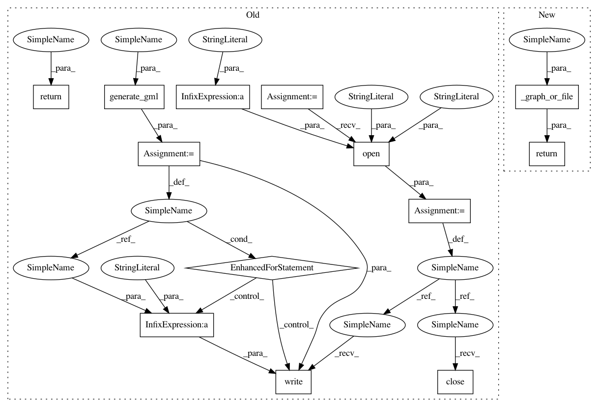

8b6b1cafd5413c585117010a92112c784ac5b948,lingpy/convert/graph.py,,gls2gml,#Any#Any#Any#Any#Any#,23
Before Change
g.add_edge(edgeA,edgeB,**data)
if filename:
f = codecs.open(filename+".gml","w","utf-8")
for line in nx.generate_gml(g):
f.write(line+"\n")
f.close()
if rcParams["verbose"]: print(rcParams["M_file_written"].format(filename+".gml"))
return g
def nwk2gml(
treefile,
filename = "",
After Change
//if "label" not in data:
g.add_edge(edgeA,edgeB,**data)
return _graph_or_file(g, filename)
def nwk2gml(
treefile,
In pattern: SUPERPATTERN
Frequency: 3
Non-data size: 13
Instances
Project Name: lingpy/lingpy
Commit Name: 8b6b1cafd5413c585117010a92112c784ac5b948
Time: 2014-12-02
Author: xrotwang@googlemail.com
File Name: lingpy/convert/graph.py
Class Name:
Method Name: gls2gml
Project Name: lingpy/lingpy
Commit Name: 8b6b1cafd5413c585117010a92112c784ac5b948
Time: 2014-12-02
Author: xrotwang@googlemail.com
File Name: lingpy/convert/graph.py
Class Name:
Method Name: gls2gml
Project Name: lingpy/lingpy
Commit Name: 8b6b1cafd5413c585117010a92112c784ac5b948
Time: 2014-12-02
Author: xrotwang@googlemail.com
File Name: lingpy/convert/graph.py
Class Name:
Method Name: nwk2gml
Project Name: lingpy/lingpy
Commit Name: 8b6b1cafd5413c585117010a92112c784ac5b948
Time: 2014-12-02
Author: xrotwang@googlemail.com
File Name: lingpy/convert/graph.py
Class Name:
Method Name: radial_layout